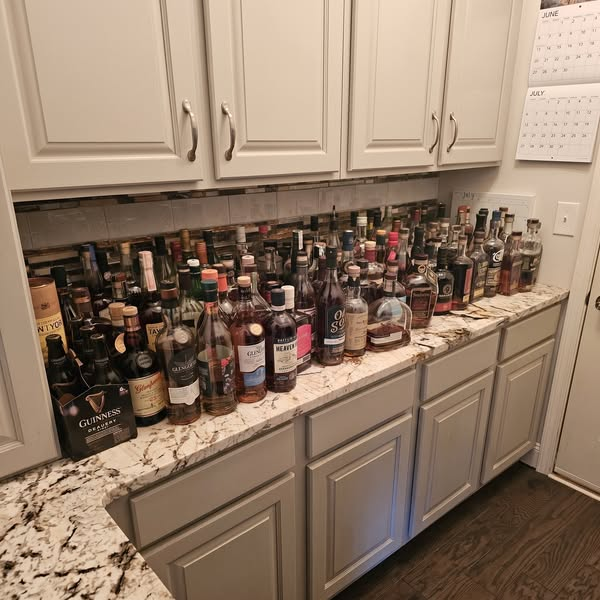
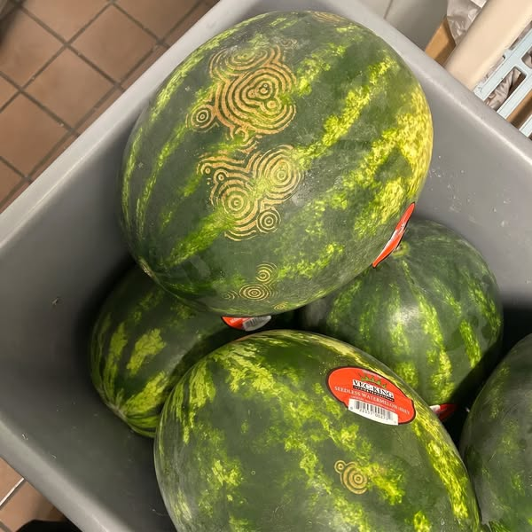
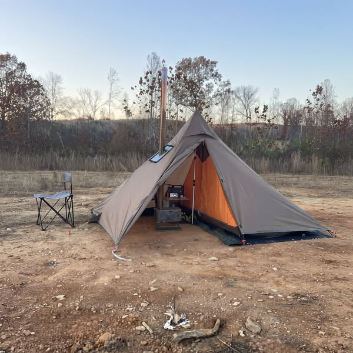
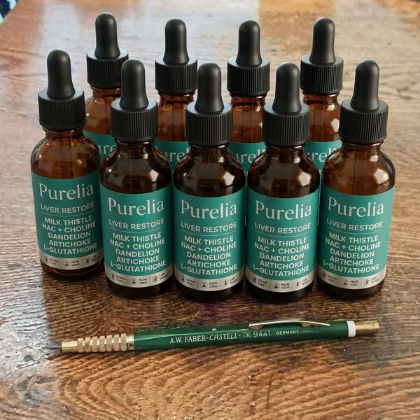
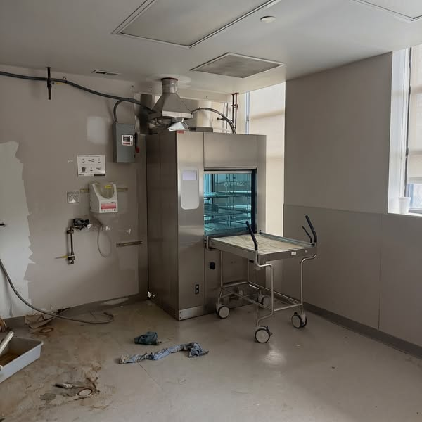
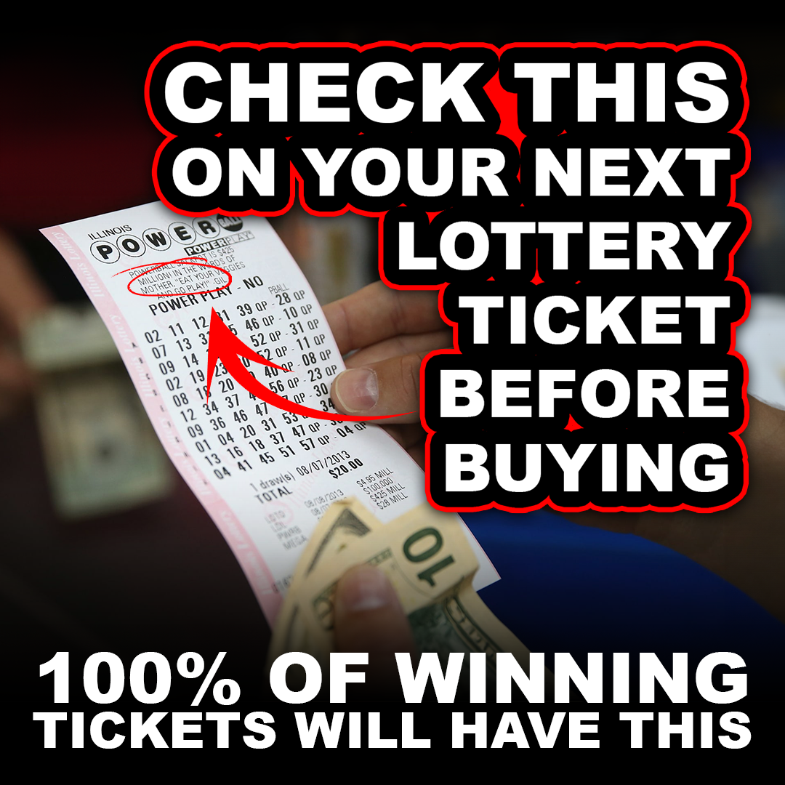
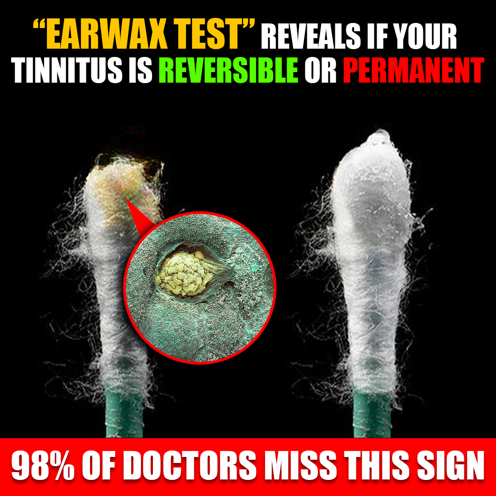
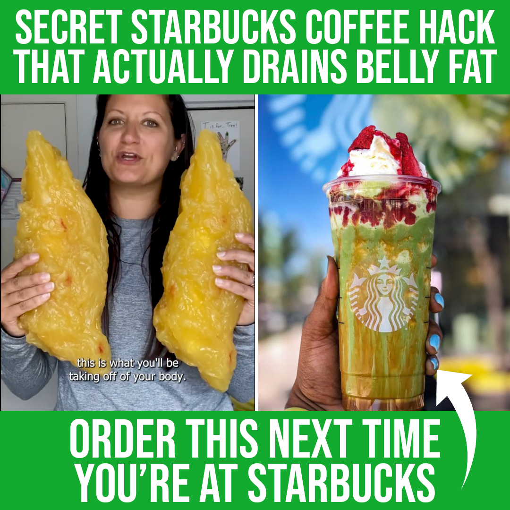
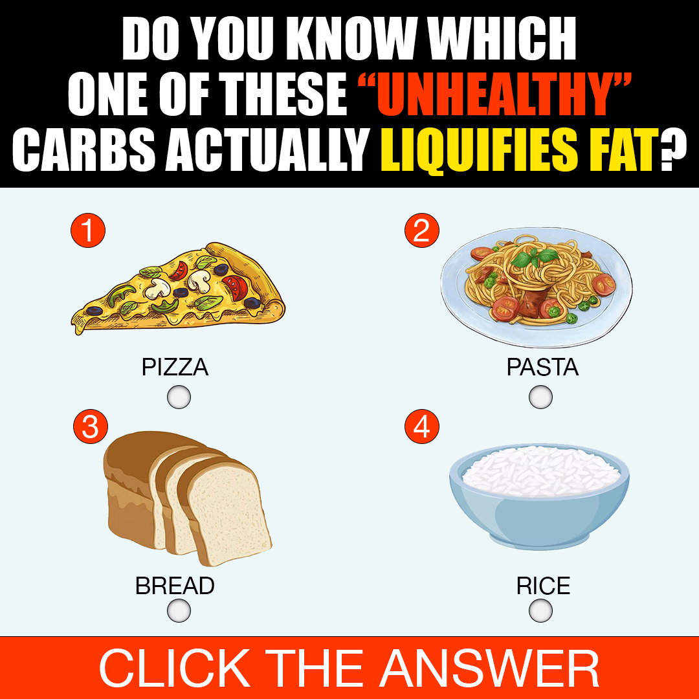
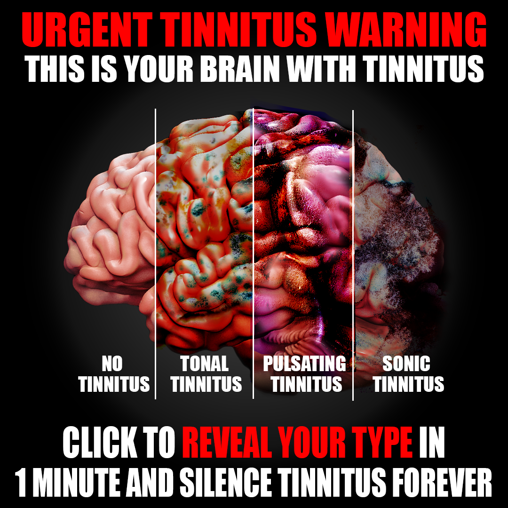

Creative Strategy · Direct Response Copywriting · Meta Media Buying
A selection of performance paid social ads ideated and written by myself.
01 — Long Form Native Statics
I am going to say something that nobody with liver problems wants to hear and I don't give a f*k if it upsets you.
My husband quit drinking on July, 2024. Poured every bottle down the sink. Went on the Mediterranean diet. Walked three miles a day. Started juicing kale, of all things. He did everything the doctor told him. He died of liver failure on October 19th at 4:17 AM.
He was 61 years old.
Quit drinking on July 8th. Ate nothing that wasn’t approved. Lost 22 pounds. Walked three miles a day, rain or shine.
The hospital bill was $63,000. The funeral was $11,200.
His favourite Norlan glass is still on the shelf above the sink. I can't move it.
If I move it, he’s really gone.
I need to tell you what happened to Robert. Because I'm seeing the same posts on Facebook that I was making just months before he died — "my husband’s doctor told him his liver enzymes are too high, any tips?" — and it makes me physically ill.
If you're over 50 and you drink, or someone you love does, please read this entire thing.
I know it's long. I know you're scrolling. I know you have things to do.
Fifteen months ago I would have given anything — everything — for someone to tell me what I'm about to tell you.
Robert went in for a routine physical on June 28th, 2024.
He felt fine. Better than fine. He'd just turned 60. He still split his own firewood. He still rode his motorcycle on the weekends. He thought he was indestructible and honestly so did I.
Two days later his doctor called.
ALT of 198. AST of 187.
"Your liver enzymes are very elevated, Robert. We need to talk about your drinking."
Robert was quiet on the call. I was in the kitchen pretending not to listen.
"How much do you drink?"
"Couple bourbons a few nights a week. Beer at the game on Sundays. Maybe whiskey at a wedding."
"That's enough to do this. You need to stop. Completely. No exceptions. We'll retest in three months."
Robert hung up the phone and sat at the kitchen table for forty minutes without saying anything.
Then he stood up, walked to the bar cart, and took everything out.
I watched him pour out a $180 bottle of Blanton's. A $90 bottle of Buffalo Trace. A $40 bottle of Maker's Mark. Two cases of beer down the kitchen sink. The whole bourbon shelf — gone in under an hour.
"That's it," he said. "I'm done."
And he was.
For 103 days, he didn't touch a drop.
No bourbon. No beer. No whiskey. Not at his nephew's wedding in August. Not at the Bears game in September. Not at his own 61st birthday dinner in October where his brother ordered an old fashioned right in front of him and Robert drank seltzer water with a lime.
He stopped going to his Tuesday night poker game because he couldn't sit there sober while everyone else got loose. He lost his buddy Mike, who told him "you're no fun anymore" and stopped inviting him. He lost the Friday bar night at the country club. He lost a piece of himself he'd been carrying for 35 years.
And he did it anyway.
Because the doctor said to.
He lost 22 pounds in those three months. He bought a juicer — Robert, with the juicer, I still can't picture it. He started walking three miles every morning before work. He took the milk thistle his doctor "wasn't against." He took a multivitamin. He ate a salad every day, the man who used to call it “cow food”.
He did everything right.
The follow-up labs came back on October 7th.
ALT: 184.
AST: 176.
He'd quit drinking entirely for 90 days and the numbers had barely moved.
The doctor said "give it more time. The liver heals slowly. We’ll retest in 6 months. Keep doing what you're doing."
Robert came home that night and sat at the kitchen table again. The same table he'd sat at after the first call.
He didn't say anything for a long time.
Then he said: "Carolyn, I gave up everything. Everything. And it didn't work."
I told him to give it time. I told him the doctor said six months. I told him to trust the process.
He nodded.
He kept walking. He kept juicing. He kept taking the milk thistle.
Five days later — five days — he woke up at 2 AM with a pain in his right side that doubled him over.
I drove him to the ER.
By the time they admitted him at 4:30 AM, the whites of his eyes were yellow. Not "a little off." Yellow. Like a highlighter. Like someone had switched the lights out behind them.
The ER doctor — a young guy, couldn't have been 35 — looked at Robert's bloodwork and his face did this thing.
"Mr. Baker, your bilirubin is 8.2. Your ALT is now 847. Your liver is in acute decompensation. We're admitting you to the ICU."
"But I quit drinking three months ago," Robert said.
The doctor just looked at him.
"I know, Mr. Baker. I'm sorry."
Robert spent 11 days in the ICU.
I learned things about the liver I never wanted to know.
I learned that when a liver shuts down, the toxins your body produces every single day — ammonia, mostly — start building up in your blood and crossing into your brain. They call it hepatic encephalopathy. It means your husband stops being your husband. He looks at you like he's trying to remember who you are. He says things that don't connect. On day 6, Robert asked me three times in twenty minutes if I'd fed the dog. We don't have a dog. We haven't had a dog since 2009.
I learned that they inject something called NAC intravenously when a liver is shutting down. The nurse told me it's the same compound they use for acetaminophen overdoses. She said it forces the liver to start rebuilding the master antioxidant it uses to protect itself — something called glutathione. She said it's the only thing they've got, and at this stage they were hoping it could buy him time.
It bought him 11 days.
Day 8, his kidneys started failing. The doctors talked about a transplant. Then they talked about him not being a candidate because of how fast he was declining. Then they stopped talking about transplants altogether.
Day 10, his belly swelled up like he was nine months pregnant. They drained 4 liters of fluid out of his abdomen. Four liters. The nurse called it ascites. I called my daughter.
Day 11 — October 19th — I was in the family room down the hall. They'd asked me to step out while they intubated him.
At 4:09 AM I heard the long beep.
At 4:17 AM, a doctor I'd never seen walked into the family room.
I knew.
"I'm so sorry. We did everything we could."
I drove home at 6 AM.
The juicer was still on the counter. The walking shoes were by the back door. The milk thistle was on the windowsill above the sink, next to the multivitamin.
His favourite Norlan glass, the one he left because it was his favorite — was still on the shelf above the sink.
Where it sits today.
I sat in his recliner.
I didn't move for six hours.
The house was so quiet I could hear the refrigerator hum.
38 years. And now the only sound in my house was the refrigerator.
The funeral was January 19th.
Robert's brother flew in from Arizona. Our daughter drove up from Bloomington. The grandkids wore suits that were too big for them.
My five-year-old granddaughter asked me: "Grammy, when is Pop-Pop coming home?"
I told her Pop-Pop was in heaven now.
She said: "Can we call him there?"
I had to walk out of the room.
After the funeral, I tried to go back to normal.
I couldn't.
Because every time I opened my phone I saw people my age, men Robert's age, posting things like "doctor said my numbers are a little elevated, anyone tried milk thistle?" or "annual physical, slightly fatty liver, no big deal."
And I knew — I KNEW — some of them were doing exactly what Robert did.
Quitting. Eating clean. Walking. Juicing. Taking the milk thistle.
And dying anyway.
I couldn't just sit there and watch it happen.
So I started researching. Not because I wanted to. Because I had to. Because if Robert gave up everything for nothing — if I can't save even one person from what happened to him — then I can't live with that.
I read for weeks. Medical journals I barely understood. Hepatology forums. Studies out of Japan and Germany. And one thing kept coming up, over and over, that no doctor ever told us:
The reason Robert's numbers didn't come down is that quitting drinking only stops the damage. It doesn't repair what's already gone.
Specifically: glutathione.
Glutathione is the master antioxidant your liver uses to filter everything that passes through your body — every medication, every toxin, every drink, every greasy meal, every breath of polluted air. Every cell in your liver depends on it.
And here's what no one told us.
After age 40, your body produces about 10% less glutathione every single year. Modern life — processed food, medications, environmental toxins — burns through what's left even faster. By 55 most people have lost nearly half their production capacity without knowing it.
And here's the part that made me sit up straight:
When your glutathione is low, the drink that's supposed to be neutralized harmlessly, now starts damaging your liver. Robert's liver wasn't damaged because he drank too much. It was damaged because he didn't have enough glutathione left to handle the drinks he was having.
Read that again.
His liver wasn't damaged by the bourbon. It was damaged by the empty tank the bourbon was being processed through.
And here's why quitting alone didn't save him: stopping the drinking stops the depletion. It doesn't refill the tank. His tank was already empty by the time the doctor told him to quit. The damage was already cascading. Eating clean, exercising, juicing kale — those things slow how fast you deplete what's left. They don't refill what's already gone.
That's why his numbers wouldn't move.
He gave up everything he loved to stop the bleeding from a wound that was already inside him.
I sat with that for three days.
And then I started looking at what I'd been doing.
I'd thrown out Robert's milk thistle the week after the funeral. But I bought a new bottle for myself. Because I'm 59. Because my labs were "borderline" at my last physical. Because I was scared.
I took it for three weeks. My doctor — a different one to Roberts, who I called because I trusted — laughed when I told her.
"Carolyn, milk thistle protects the liver cells you still have working. But you can't protect cells that are running on empty. It sits on the surface. It doesn't refill anything."
Then she said something I'll never forget:
"If Robert had been on something that actually rebuilt his glutathione supply, the picture might have been very different."
I stopped breathing for a second.
"Why didn't his doctor prescribe that?"
She was quiet for a long time.
"Because we don't prescribe supplements. And the version that works isn't a prescription."
I went to CVS the next day. I stood in that aisle for forty minutes.
Milk thistle. Liver detox tea. Dandelion root capsules. "Liver cleanse" 30-day program. Multivitamins with "liver support." Generic NAC capsules — $14.99, 600mg, the cheap stuff.
I bought the cheap NAC. Took it for two weeks. No changes to my numbers.
I started Googling and what I found made me throw the bottle in the trash.
A compromised liver can't absorb a capsule properly. The capsule passes through the organ that's already failing before the active ingredients reach the bloodstream. Most of what you're paying for never makes it where it needs to go. You're peeing out $14.99.
Liquid bypasses this entirely. Liquid hits the bloodstream directly.
I had been doing the right thing in the wrong form.
I was furious. I'm still furious.
About a week later I was reading a thread on Facebook — one of those liver health groups, full of people like Robert was, "elevated enzymes" people, "borderline NAFLD" people — and a woman posted something that stopped me cold.
She said her husband had been told to quit drinking at 58. He quit. His numbers barely moved for six months — sound familiar? — and then he found a liquid formula that combined NAC with actual glutathione, plus two bitter herbs to open the drainage pathway.
His ALT went from 191 to 41 in ten weeks.
Without going back to drinking. Without doing anything else different.
I read that post six times.
I started looking into the formula she mentioned. And what I learned is that there are five things a serious liver support has to do at the same time, or it's a waste of your money:
It has to rebuild the production of glutathione from the inside out. That's NAC — the same compound the ICU was putting into Robert's IV at the end. Not a vitamin. The actual building block.
It has to replenish glutathione that's already been depleted, directly, while the rebuild is happening. That's L-Glutathione itself. NAC restarts the factory. L-Glutathione restocks the shelves at the same time.
It has to package and move the fat that's already backed up inside your liver cells. That's choline. Choline is the fuel for the export pump. Without it, the fat just sits there hardening into scar tissue, no matter how much weight you lose.
It has to open the drainage pathway so what the liver processes actually leaves the body instead of recirculating. That's a bitter herb blend — artichoke extract and dandelion root, working in sequence. One opens bile production. The other clears the final pathway out.
And it has to be in liquid form. Because a compromised liver cannot absorb a capsule properly.
Five things. All five. At the same time. In liquid form.
I went through every product I'd looked at in CVS. Not one of them did all five. Most did one. The expensive ones did two. None of them were liquid.
That's when I found Purelia.
It was the only formula I could find that hit all five. NAC. L-Glutathione. Choline. Artichoke. Dandelion. Liquid dropper, two droppers in the morning. Made in the US. 60-day money-back guarantee tied to your actual labs — if your numbers don't improve, you get every penny back, no questions asked.
I almost didn't order it.
After the CVS aisle. After the milk thistle. After Robert. After everything.
But I had a brother who was still drinking like Robert used to drink. I had a son-in-law with "borderline" fatty liver. I had myself.
I ordered it.
My brother. Came back from a routine appointment with an ALT of 168. Didn’t know what to do.
I sent him a bottle. I didn't ask. I just sent it. Wrote a note that said "If you don't take this every day I will never speak to you again, Frank, I mean it."
He took it. He kept drinking — he wouldn't quit, he's stubborn the way Robert was stubborn — but he took it every morning.
He went back to his doctor four weeks ago for a follow-up.
ALT: 32.
Down from 168. In ten weeks.
He hadn't stopped drinking. He hadn't changed his diet. He hadn't started exercising. The only thing he changed was the liquid he took in the morning.
He called me crying. My brother. 57 years old. Crying on the phone like a kid.
He said: "Carolyn, I think Robert died because nobody told him about this."
I had to hang up.
Then there's my son-in-law. 44, two kids, "borderline fatty liver" at his last physical. Started taking it six weeks ago. He says his afternoon energy is back. He says the dull ache he'd been feeling under his right rib for two years — the one his doctor said was "probably nothing" — is gone.
My neighbor Karen. Her husband died of cirrhosis four months before Robert. Two widows on the same street. She started taking it two days after I told her. She says it's the first time since he died that she doesn't feel like she's waiting for a phone call.
I told my sister. I told Robert's brother. I told the women in my book club. I told the guys at Robert's old poker game when I went to drop off a casserole.
I'm not a doctor. I'm not a scientist. I'm not selling anything and I don't get a penny from any of this.
I'm a 59-year-old widow sitting in my dead husband's chair at 2 in the morning because I can't sleep and I can't stop thinking about my brother and whether he's going to end up where Robert ended up.
Here's what I know because I lived it:
Quitting drinking stops the damage. It doesn't refill what's been depleted. It doesn’t repair the damage.
Milk thistle protects cells. It doesn't rebuild the tank those cells are running on.
A liver running on empty cannot absorb a capsule properly. Liquid bypasses this.
Robert gave up everything he loved for 103 days and it didn't save him because nobody told him what was actually broken.
I wish someone had told us before June 28th, 2024.
Before the routine physical. Before the bourbon down the sink. Before the 103 days of seltzer water with lime. Before October 19th at 4:17 AM.
I can't go back. Robert can't come back. His Norlan glass is still on the shelf and it's going to stay there.
But you can still go forward. Your husband can. Your brother can. You can.
The page that explains all of this — the glutathione mechanism, why the numbers don't move when you quit, what your doctor doesn't know about liquid absorption, and what Purelia actually contains — it's the page I found at 3 AM.
Not protecting. Restoring.
That's the line that finally made it click for me.
I want you to read it. Not for me. For whoever you'd leave behind.
👇 https://try.officialpurelia.com/liver-support-pdp1
Robert used to say: "You can't unring the bell, but you can stop ringing it."
You can stop ringing it.
— Carolyn Baker, age 59 Springfield, IL
P.S. The Norlan glass is still on the shelf. I still can't move it. Every morning I walk past it and for one second I forget. For one second I think he's about to come down the stairs and tell me he's going for a walk before work. He's not. $63,000 in hospital bills. $11,200 for the funeral. 103 days of him giving up everything he loved for nothing. And a liquid that costs less than his Tuesday night poker buy-in — a liquid his own doctor told me could have changed everything if we'd known. Please. Don't end up here. Don't let someone you love end up here.
👇 https://try.officialpurelia.com/liver-support-pdp1
P.P.S. I don't work for Purelia. I don't get a penny from this. I'm writing this at 2:14 AM because I can't sleep and Robert's side of the bed is cold and my brother is 57 and stubborn and I'm scared every time the phone rings. Share this with anyone you love who drinks. Even a little. Even "responsibly." Even if they already quit. Please.

First big native winner for this liver brand. All iterations included, this ad has done around $2m in adspend. The liver space was initially difficult to write for since the condition is asymptomatic, there also wasn't many other competitors in this space to look at for inspiration. I decided to look at the blood pressure space since that is also a large TAM market where the condition is asymptomatic. I found there that a lot of the big ads in that space were selling to a solution aware avatar selling against the common solutions (blood pressure meds). Since there wasn't a commonly used medication in the liver space, I decided to sell against the most common solution for the space which was abstinence as I knew there would likely be a large TAM of customers who didn't want to give up drinking.
I had some initial success targeting this avatar which validated the theory. But it was only when I found an ad in an adjacent niche from a wife's POV watching her husband do everything right and die anyway that I had a real breakthrough. From a psychological perspective, testing this angle made a lot of sense as fear of death tends to be an abstract concept and is hard to target, however it is usually a concept that a loved one can grasp quite easily. I took this POV and adapted the avatar so that there was more emotional depth to his sacrifice. Instead of just giving up drinking and poker nights etc. I created a real sacrifice of the husband's identity and for this to all be in vain was powerful. The ICU scene is really important in this ad as the market generally are not too aware of how bad liver disease can get.
My husband was diagnosed with fatty liver in June 2022. He never drank a day in his life. After the diagnosis, he cut out sugar. Went on the Mediterranean diet. Walked three miles a day. Lost 41 pounds. He died of liver failure on October 19th, 2024 at 4:17 AM.
He was 58 years old.
He cut out sugar completely on June 8th. Did the Mediterranean diet for two years and three months. Lost 41 pounds. Walked our golden retriever three miles every single morning before work, rain or shine. He did everything the hepatologist told him.
The hospital bill was $71,000. The funeral was $11,400.
His reading glasses are still on the nightstand. I can't move them.
If I move them, he's really gone.
I need to tell you what happened to David. Because every week I see posts on Facebook from women like me — "my husband's ALT is slightly elevated, the doctor said to cut carbs, any tips?" — and it makes me physically sick.
If you're the wife of a man over 45 who got the fatty liver diagnosis, or you got it yourself, please read this whole thing.
I know it's long. I know you're scrolling. I know you have things to do.
Sixteen months ago I would have given anything — everything — for someone to tell me what I'm about to tell you.
David went in for his annual physical on June 9th, 2022.
He felt fine. Better than fine. He'd just turned 56. He was still coaching his nephew's Little League team. He still mowed his own lawn. He thought he was healthy and honestly so did I — he'd never smoked, never been a drinker, his dad was 87 and still driving.
Three days later his primary called.
ALT of 94. AST of 88.
The ultrasound came back with moderate steatosis. The hepatologist confirmed it two weeks later. Non-alcoholic fatty liver disease. F2 fibrosis already.
"There's no medication for this. We treat it with lifestyle. Mediterranean diet, drop 10% of your body weight, walk every day. We'll retest in six months."
Robert hung up the phone and sat at the kitchen table for forty minutes without saying anything.
Then he stood up, opened the pantry, and started filling a trash bag.
I watched him throw out the Frosted Flakes. The Ritz crackers. The Triscuits. Three boxes of Pop-Tarts our grandkids ate when they came over. Two jars of Smucker's. The entire bottom shelf of the freezer — the Eggos, the Hot Pockets, the Häagen-Dazs he loved.
"That's it," he said. "I'm done."
And he was.
For 28 months, he didn't break the diet once.
No bread. No pasta. No sugar. Not at his sister's wedding in Phoenix. Not on our 35th anniversary in Charleston where they brought out a complimentary slice of pecan pie and he asked them to take it back. Not at his own 58th birthday dinner where I made him grilled salmon and a salad and he smiled and said it was the best birthday meal he'd ever had.
He stopped going to the Sunday cookouts at his brother's because everyone was eating burgers on potato rolls and he couldn't sit there with a plate of plain chicken without feeling like an alien. He stopped going to the diner where he and his buddies had been meeting for Saturday breakfast since 1994 because the smell of pancakes made him want to cry. He lost his buddy Mike, who told him "you're no fun anymore" and stopped inviting him.
He lost a piece of himself he'd been carrying for 35 years.
And he did it anyway.
Because the doctor said to.
He lost 41 pounds. He walked Riley — our golden — three miles every morning before work, summer and winter, didn't matter. He bought a juicer. David. With a juicer. I still can't picture it.
He took the milk thistle his hepatologist "wasn't against." He took a multivitamin. He drank lemon water every morning. He ate exactly what they told him to eat.
He did everything right.
The follow-up labs came back on December 6th, 2022.
ALT: 91.
AST: 86.
Six months of doing everything right and the numbers had barely moved.
The doctor said, "The liver heals slowly. Give it more time. We'll retest in six months. Keep doing what you're doing."
So he did.
June 2023 labs: ALT 96. AST 91. Higher.
December 2023 labs: ALT 104. AST 99.
The fibroscan in January 2024 showed F3. He had progressed.
David came home that night and sat at the kitchen table. The same table he'd sat at after the first phone call.
He didn't say anything for a long time.
Then he said: "Linda, I gave up everything. Everything I loved to eat. For 19 months. And it's getting worse."
I told him to give it more time. I told him the hepatologist said it could take two years. I told him to trust the process.
He nodded.
He kept walking Riley. He kept eating the salmon and the spinach. He kept taking the milk thistle.
Five days later — five days — he woke up at 2 AM with a pain in his right side that doubled him over.
I drove him to the ER.
By the time they admitted him at 4:30 AM, the whites of his eyes were yellow. Not "a little off." Yellow. Like a highlighter. Like someone had switched a light on behind them.
The ER doctor — a young guy, couldn't have been 35 — looked at Robert's bloodwork and his face did this thing.
"Mr. Hayes, your bilirubin is 9.1. Your ALT is now 612. Your liver is in acute decompensation. We're admitting you to ICU."
"But I've been on the diet for over two years," David said.
The doctor just looked at him.
"I know, Mr. Hayes. I'm so sorry."
David spent 6 days in the ICU.
I learned things about the liver I never wanted to know.
I learned that when a liver shuts down, the toxins your body produces every single day — ammonia, mostly — start building up in your blood and crossing into your brain. They call it hepatic encephalopathy. It means your husband stops being your husband. He looks at you like he's trying to remember who you are. He says things that don't connect. On day 3, David asked me three times in twenty minutes if I'd fed the dog. We don't have a dog. We haven't had a dog since 2009.
I learned that they inject something called NAC intravenously when a liver is shutting down. The nurse told me it's the same compound they use for acetaminophen overdoses. She said it forces the liver to start rebuilding the master antioxidant it uses to protect itself — something called glutathione. She said it's the only thing they've got, and at this stage they were hoping it could buy him time.
It bought him 6 days.
Day 4, his kidneys started failing. The doctors talked about a transplant. Then they talked about him not being a candidate because of how fast he was declining. Then they stopped talking about transplants altogether.
Day 5, his belly swelled up like he was nine months pregnant. They drained 4 liters of fluid out of his abdomen. Four liters. The nurse called it ascites. I called my daughter.
Day 6 — October 19th — I was in the family waiting room down the hall. They'd asked me to step out.
At 4:11 AM I heard the long beep down the corridor.
At 4:17 AM, a young resident I'd never seen walked into the waiting room.
I knew.
"Mrs. Hayes. I'm so sorry. We did everything we could."
I drove home at 6:30 AM.
The juicer was still on the counter. His walking shoes by the back door. The milk thistle on the windowsill above the sink, right next to the multivitamin.
His reading glasses were on the nightstand where he left them.
Where they sit today.
I sat in his recliner.
I didn't move for seven hours.
The house was so quiet I could hear Riley breathing on the rug.
36 years. And the loudest thing in my house was a sleeping dog.
The funeral was October 26th.
David's brother flew in from San Diego. Our daughter came up from Atlanta with the grandkids. Our son flew in from Denver. The grandkids wore suits that were too big for them.
My five-year-old granddaughter asked me: "Grammy, when is Pop-Pop coming home?"
I told her Pop-Pop was in heaven now.
She said: "Can we call him there?"
I had to walk out of the room.
After the funeral, I tried to go back to normal.
I couldn't.
Because every time I opened Facebook I saw women my age — wives of men David's age — posting things like, "my husband's ALT came back at 71, doctor said borderline fatty liver, anyone tried milk thistle?" Or, "Mediterranean diet for 6 months, his numbers haven't moved, what else can we try?"
And I knew — I KNEW — some of them were doing exactly what David did.
The diet. The walking. The juicing. The milk thistle.
And ending up where I am.
I couldn't just sit there and watch it happen.
So I started researching. Not because I wanted to. Because I had to. Because if David gave up two years and four months of everything he loved for nothing — if I can't save even one other family from what happened to mine — then I can't live with that.
I read for weeks. PubMed papers I had to read three times to understand. Hepatology forums where people described David's exact trajectory. Studies out of Japan and Germany.
And one thing kept coming up, over and over, that no hepatologist ever told us.
The reason David's numbers didn't come down is that the lifestyle changes only slows the damage. It doesn't repair what's already gone.
Specifically: glutathione.
Glutathione is the master antioxidant your liver uses to filter everything that passes through your body — every medication, every environmental toxin, every fatty meal, every hormone, every breath of polluted air. Every cell in your liver depends on it.
And here's what no one told us.
After age 40, your body produces about 10% less glutathione every single year. Modern life — processed food, medications, environmental toxins — burns through what's left even faster. By 55 most people have lost nearly half their production capacity without knowing it.
When your glutathione is low, your liver keeps running but has nothing to work with. Fat backs up inside liver cells. Toxins recirculate. Enzymes climb. The damage has nowhere to go.
Read that again.
David's liver wasn't damaged because he ate the wrong food. It was damaged because his glutathione tank was empty — and once it's empty, even the cleanest food in the world will slowly destroy your liver.
And here's why eating clean alone didn't save him: cleaning up the diet stops the depletion. It doesn't refill the tank. His tank was already empty by the time the hepatologist told him to cut the carbs.
That's why his numbers wouldn't move.
He gave up everything he loved to eat to stop the bleeding from a wound that was already inside him.
I sat with that for three days.
And then I started looking at what I'd been doing.
I'd thrown out David's milk thistle the week after the funeral. But I bought a new bottle for myself. Because I'm 57. Because my last physical came back with "mildly elevated" liver enzymes too. Because I was terrified.
I took it for a month. My internist — a different one than David's, who I called because I trusted her — laughed when I told her.
"Linda, milk thistle protects liver cells. But you cannot protect cells running on an empty tank. It sits on the surface while the depletion continues underneath. It doesn't refill anything."
Then she said something I'll never forget.
"If David had been on something that actually rebuilt his glutathione, his story might have been very different."
I stopped breathing for a second.
"Why didn't his doctor prescribe that?"
She was quiet for a long time.
"Because we don't prescribe supplements. And the version that works isn't a prescription."
I went to CVS the next day. I stood in that aisle for forty-five minutes.
Milk thistle. Liver detox tea. Dandelion root capsules. 30-day "liver cleanse" kits. Multivitamins with "liver support." Generic NAC capsules — $14.99 a bottle, 600mg, the cheap stuff.
I bought the NAC. Took it for three weeks. Ran my labs. Nothing.
I started digging again and what I found made me throw the bottle in the trash.
A liver running on empty can't absorb a capsule properly. Most of the active ingredient passes through unused. The capsule passes through the organ that's already failing before it ever reaches the bloodstream. You're paying for compounds that never get where they need to go.
Liquid bypasses this entirely. Liquid hits the bloodstream directly.
I had been doing the right thing in the wrong form.
I was furious. I'm still furious.
About two weeks later I was up at 1 AM on the NAFLD subreddit — the same one I'd been reading since David died — and a woman in Ohio posted something that stopped me cold.
She said her husband had been diagnosed with NAFLD at 54. F3 fibrosis. He did the diet. His fibroscan progressed anyway — sound familiar? — and then she found a liquid formula that combined NAC with actual L-Glutathione, plus two bitter herbs to open the drainage pathway, plus choline to actually move the fat out of his liver cells.
His ALT went from 118 to 34 in twelve weeks.
His next fibroscan came back at F1.
Without changing anything else.
I read that post four times.
I started looking into the formula she mentioned. And what I learned is that there are five things a serious liver support has to do at the same time, or it's a waste of your money.
It has to rebuild the production of glutathione from the inside out. That's NAC — the same compound the ICU was putting into David’s IV at the end. Not a vitamin. The actual building block.
It has to replenish glutathione that's already been depleted, directly, while the rebuild is happening. That's L-Glutathione itself. NAC restarts the factory. L-Glutathione restocks the shelves at the same time.
It has to package and move the fat that's already backed up inside your liver cells. That's choline. Choline is the fuel for the fat export pump. Without it, the fat just sits there hardening into scar tissue, no matter how much weight you lose. This is the part nobody told David. He was eating the cleanest diet of his life and the fat in his liver cells had no way out. There was no export pump because there was no fuel for one.
It has to open the drainage pathway so what the liver processes actually leaves the body. That's a bitter herb blend — artichoke and dandelion, working in sequence. One opens bile production. The other clears the final pathway out.
And it has to be in liquid form. Because a compromised liver cannot absorb a capsule properly.
Five things. All five. At the same time. In liquid form.
I went through every product I'd looked at in CVS. Not one of them did all five. Most did one. The expensive ones did two. Not a single liquid in the whole aisle.
That's when I found Purelia.
It was the only formula I could find that hit all five. NAC. L-Glutathione. Choline. Artichoke. Dandelion. Liquid dropper, two droppers in the morning. 60-day money-back guarantee tied to your actual labs — if your numbers don't improve, you get every penny back, no questions asked.
I almost didn't order it.
After the CVS aisle. After the milk thistle. After David. After everything.
But my brother was sitting on an ALT of 138 and a "borderline fatty liver" diagnosis his GP said to "monitor." My son-in-law in Atlanta had just been told his fibroscan showed early steatosis. I had my own labs creeping in the wrong direction.
I ordered it.
My brother first. ALT 138. Diagnosed NAFLD eighteen months ago, doing the diet, watching the numbers climb anyway. I didn't ask. I sent him a bottle and a note that said, "If you don't take this every day I will never speak to you again, Frank, I mean it."
He took it. He didn’t give up his food — he's stubborn the way David was stubborn — but he took the two droppers every morning.
He went back to his doctor last month for his follow-up.
ALT: 41.
Down from 138. In ten weeks.
He hadn't changed anything else. Same diet, same walks, same life. The only thing he changed was the liquid he took with his morning coffee.
He called me crying. My 61-year-old brother. Crying on the phone like a kid.
He said, "Linda, I think David died because nobody told him about this."
I had to hang up.
Then there's my son-in-law in Atlanta. 39, two little girls, early NAFLD on his last fibroscan. Started taking it eight weeks ago. He says the dull ache he'd had under his right rib for two years — the one his doctor told him was "probably just gas" — is gone. He says his afternoon energy is back for the first time since the diagnosis.
My neighbor across the street, Patricia. Her husband died of cirrhosis fourteen months before David. Two widows on the same cul-de-sac. She started taking it three days after I told her, just for prevention. She says it's the first time since he died that she doesn't feel like she's waiting for her own diagnosis.
I told my sister. I told David's brother in San Diego. I told the women in my Bible study. I told David's old fishing buddies when they came by to drop off a casserole.
I'm not a doctor. I'm not a scientist. I'm not selling anything and I don't get one penny from any of this.
I'm a 57-year-old widow sitting in my dead husband's recliner at 2 in the morning because I can't sleep and I can't stop thinking about Frank in Cleveland and my son-in-law in Atlanta and the women on the NAFLD subreddit posting "my husband's numbers won't come down, what else can we try."
Here's what I know because I lived it:
Eating clean stops the depletion. It doesn't refill what's been depleted. It doesn't repair the damage.
Milk thistle protects liver cells. But you cannot protect cells running on an empty tank.
A liver running on empty cannot absorb a capsule properly. Liquid bypasses this.
David gave up everything he loved to eat for 28 months and it didn't save him because nobody told him what was actually broken.
I wish someone had told us before June 9th, 2022.
Before the diagnosis. Before the trash bag of food in the pantry. Before the 28 months of plain grilled salmon. Before October 19th at 4:17 AM.
I can't go back. David can't come back. His reading glasses are still on the nightstand and they're going to stay there.
But you can still go forward. Your husband can. Your brother can. You can.
The page that explains all of this — the glutathione mechanism, why the Mediterranean diet alone wasn't enough, what your hepatologist doesn't know about liquid absorption, and exactly what's inside Purelia — it's the page I found at 3 AM.
Not protecting. Restoring.
That's the line that finally made it click for me.
I want you to read it. Not for me. For whoever you'd leave behind.
👇 https://try.officialpurelia.com/liver-support-pdp1
David used to say, "You can't change what already happened. But you can change what happens next."
You can change what happens next.
— Linda Hayes, age 57, Naperville, IL
P.S. His reading glasses are still on the nightstand. I still can't move them. Every morning I walk past them and for one second I forget. For one second I think he's about to come down the stairs and ask me where Riley's leash is. He's not. $71,000 in hospital bills. $11,400 for the funeral. 28 months of him giving up every food he loved for nothing. And a liquid that costs less than the bag of organic spinach he was eating every day — a liquid my own doctor told me could have changed everything if we'd known. Please. Don't end up here. Don't let someone you love end up here.
👇 https://try.officialpurelia.com/liver-support-pdp1
P.P.S. I don't work for Purelia. I don't get a penny from this. I'm writing this at 2:38 AM because I can't sleep and David's side of the bed is cold and Frank in Cleveland is 61 and the women on that subreddit are still posting at 2 AM and I'm terrified every time my phone rings. Share this with anyone you love who has fatty liver. Even "mild." Even "borderline." Even if they're doing the diet perfectly. Especially then. Please.

This was a very important avatar iteration from the first winning ad. The initial ad not only had elements of the husband "doing everything right" and "giving up everything he loved and dying anyway" but at it's core it sells against the commonly used solution. When looking at the liver market as a whole, the fact is that the majority of people with fatty liver are light/non-drinkers (NAFLD) for which you can't target the abstinence angle. But after doing research, I found that one of their biggest pain points was the strict diet they have to comply with and the things they have to give up. From there, it became pretty clear that a good angle to test would be to sell against the strict mediteranean diet. This would keep the key elements of the initial winner but target the NAFLD market which is actually a much bigger TAM but is generally harder to target as there's no "quitting alcohol" to sell against.
My hunting buddy of twenty-eight years quit drinking in July. He was dead by Halloween. We toasted him with seltzer water around the fire.
I'm writing this on my back porch at 11 PM the night before opening weekend. There are four chairs around the fire pit at deer camp this year instead of five. The bottle of Wild Turkey he always brought hasn't been opened. It sat on the cooler all weekend in October and nobody touched it. It's still in the cabin.
If you're a man over 50 who likes a drink at the end of a long day, or you know someone who does, please read this whole thing.
I know it's long. I know your phone is buzzing. I know there's other things to do.
Eight months ago I would have torn up every magazine and inbox I had to find what I'm about to tell you.
Bill Henderson was my hunting buddy for twenty-eight years. We met at a gun show in Indiana in 1996. From that fall on, we went up to a cabin in Wisconsin every opening weekend with three other guys. Twenty-eight Octobers. Same five chairs around the same fire pit. Same routine, the bourbon poured after the rifles were locked up.
Bill brought Wild Turkey. He'd been bringing the same bottle for twenty-eight years.
Last July, he stopped bringing the bottle.
By October, Bill was in the hospital.
Bill went in for a routine physical on June 21st last year. He was 59. He felt good. The man could still field-dress a buck on his own at 59. He still loaded his own shells. He told me at breakfast the morning of the appointment that he was only going because his wife had been pestering him for six months.
Three days later his doctor called him at the shop.
ALT of 192. AST of 178.
"Your liver enzymes are elevated, Bill. We need to talk about your drinking."
Bill called me from his truck that night. I was the first person he told. Not his wife. Me.
He said, "Doc says I have to quit. Completely. No exceptions. They want to re-test in three months."
I said, "What are you going to do?"
He said, "I'm going to quit, brother. What else can I do?"
He called his wife. He drove home. He poured every bottle in the bar cabinet down the kitchen sink. Wild Turkey. A bottle of Knob Creek. A bottle of Old Forester his son had given him for Father's Day. Two six-packs of Stella in the garage fridge.
I heard about it from his wife months later. She said it was over inside an hour. She said she stood in the doorway watching him do it and she didn't know what to say to him so she didn't say anything.
For 102 days, Bill didn't touch a drop.
Not at the Fourth of July cookout I hosted. Not at his brother-in-law's retirement party in August. Not at our preseason camp meeting in September when the four of us split a flight of bourbons and Bill drank Diet Coke out of a rocks glass.
He stopped going to his Friday lunch with the guys from the shop because three of them ordered pints at one and he couldn't sit there sober watching it. He told me on the phone in early September that he felt like he'd lost a piece of himself.
He took milk thistle. His doctor had said it wouldn't hurt to try. The bottle sat on the windowsill above his kitchen sink, next to his multivitamin and a bottle of fish oil his wife had bought him.
He walked two miles every morning before opening the shop. He dropped twenty pounds in those three months. The man bought a juicer. Bill. With a juicer. I still can't picture it.
He did every single thing his doctor told him to do.
The follow-up labs came back on September 30th.
ALT: 181.
He had given up the bottle, the Friday pint, three social events, and a piece of his identity for ninety days. His ALT dropped eleven points.
He called me from his truck the same afternoon. He sat in his truck in the doctor's parking lot for forty minutes before he could drive home.
He said, "Tom, I gave up everything. Everything. And it didn't work."
I told him to give it time. I told him the doctor said six months. I told him to keep walking, keep juicing, keep at it. I told him I'd see him at camp in three weeks.
October 18th. Camp weekend. Four of us drove up Friday. Bill drove up Saturday because he'd had to work a half day at the shop.
He showed up at the cabin at 4 PM looking yellow. Not a touch off. Yellow. Like a highlighter behind his eyes.
I thought it was the cabin light at first.
By dinner he was holding his right side under the rib. He laughed it off. Said he'd pulled something loading the truck.
By 11 PM he was doubled over on the cabin couch.
I drove him to the ER in Eau Claire at 2 AM. The other guys followed in Bill's truck.
The ER admitted him at 4:15 AM. The doctor was young. Couldn't have been thirty-five. He looked at Bill's bloodwork and his face shifted in a way I can't unsee.
Bilirubin 8.4. ALT 821.
Acute liver decompensation.
Bill said, "But I quit drinking three months ago."
The young doctor said, "I know, Mr. Henderson. I'm so sorry."
Bill spent ten days in the ICU.
I drove home on Sunday and drove back to Eau Claire on Tuesday with his wife. We took turns sitting with him. The other camp guys came up on Thursday.
I learned things about the liver I never wanted to know.
I learned that when a liver shuts down, the toxins your body makes every day, ammonia mostly, build up in your blood and cross into your brain. They call it hepatic encephalopathy. It means the man you've hunted with for twenty-eight years stops being him. He looks at you like he's trying to place you. On Day 5, Bill asked me three times in fifteen minutes if I'd remembered to feed the dog. He doesn't have a dog. His dog died in 2011.
The nurse explained the IV bag. She said it was something called NAC.
NAC is the same compound they use for acetaminophen overdoses.
She told us it forces the liver to start rebuilding the master antioxidant it uses to protect itself, something called glutathione. She said it was the only thing they had. She said at this stage they were hoping it could buy him time.
It bought him ten days.
Day 7 his kidneys started failing. The doctors talked about a transplant. Then they talked about him not being a candidate because of how fast he was crashing. Then they stopped talking about transplants.
Day 9 his belly swelled like he was nine months pregnant. They drained 3.8 liters of fluid out of his abdomen. The nurse called it ascites.
Day 10. October 27th. 5:42 AM.
I was in the family room down the hall. His wife had asked me to drive her up the night before because she didn't want to drive home alone if something happened.
A doctor I'd never seen walked in.
I knew.
I drove his wife home at 8 AM. The juicer was still on the kitchen counter. The walking shoes were by the back door. The milk thistle was on the windowsill above the sink, next to the multivitamin.
His Wild Turkey bottle, the one he'd packed for the cabin and never opened, was sitting in the cabin still. I went back up the following weekend to clean out his bunk and I left the bottle where it was.
It's still there.
The funeral was November 8th. We carried him. Five chairs at camp became four.
After the funeral I tried to go back to normal.
I couldn't.
Because every time I opened my phone I saw guys at camp, guys at the shop, guys at church my age, posting things in the local hunting groups. "Doc said my liver enzymes are up a bit, anyone tried milk thistle?" "Got my physical results back, slight fatty liver, no big deal."
And I knew. I knew some of them were doing exactly what Bill did. Quitting. Eating clean. Walking. Juicing. Taking the milk thistle.
And dying anyway.
I couldn't just sit there.
So I started reading. Not because I wanted to. Because if Bill gave up everything for nothing, and I can't save a single one of these guys from what happened to him, then I can't live with that.
I read for three weeks straight. Medical journals I barely followed. Hepatology forums. Studies out of Japan and Germany. And one thing kept showing up that no doctor ever explained to Bill.
The reason Bill's numbers didn't move is that quitting stops the damage. It does not repair what's already been spent.
The thing that was spent was glutathione.
Glutathione is the master antioxidant the liver runs on. Every drink, every prescription, every cut of meat, every breath of bad air, every long stretch of stress at the shop, all of it gets neutralized by glutathione. Your liver cannot do its job without it.
Here is what no doctor told Bill.
After 40, your body makes roughly 10% less glutathione every year you're alive. Modern life burns through what's left even faster. Processed food, medications, work stress, you name it. By the time a man is 55, most have lost close to half their production capacity and have no idea.
By the time Bill sat down at his physical at 59, his tank was already running on fumes.
His liver wasn't damaged because of the Wild Turkey. It was damaged because there wasn't enough glutathione left in the tank to process the Wild Turkey safely. The same pour he'd handled fine at 35 was hitting his liver at 59 like acid.
Read that again.
The drink didn't change. The tank did.
And here is why quitting alone didn't save him. Stopping the drinking stopped the burn rate. It does not refill what is already gone.
His tank was already empty by the time the doctor told him to quit. The damage was already cascading. The juicer, the walking, the milk thistle, those things slow how fast you spend what's left. They do not replenish what's already gone.
That's why his numbers wouldn't move.
He gave up everything he loved to slow the bleeding from a wound that was already inside him.
I sat with that for four days at deer camp by myself. I drove up there alone after Thanksgiving and I sat in front of the fire pit with his Wild Turkey bottle on the cooler in front of me and I read studies on my phone until the battery died.
When I got home I called my own GP.
Not Bill's. Mine. A woman who's been my doctor for twelve years. I trust her.
I told her the whole story. I asked her what was on Bill's windowsill above the sink.
She said, "Milk thistle?"
I said yes.
She said, "Tom, milk thistle protects the liver cells you still have working. It cannot help cells that are running on empty fuel. It coats them. It does not restock them."
Then she said it again:
Milk thistle sits on the surface. It does not refill anything.
I asked her why nobody had given Bill something that would actually rebuild the tank.
She was quiet for a long time.
"Because we don't prescribe supplements. And the one that actually rebuilds glutathione production isn't a prescription."
I drove from her office to the Walgreens on the way home.
I stood in the supplement aisle for almost an hour.
Milk thistle in three different brands. Liver detox tea in a box with a leaf on it. Dandelion root capsules. A thirty-day "liver cleanse" with seven different bottles in it. Multivitamins with "liver support" on the label. Generic NAC capsules, $13.99, the cheap stuff.
I bought the NAC capsules. I took them for two weeks. My next quarterly labs came back unchanged.
So I started reading again. And what I found made me throw the bottle in the trash.
A failing liver cannot absorb a capsule properly. The capsule has to pass through the very organ that's broken before the active ingredients reach the bloodstream. Most of what you swallow never gets where it needs to go. You're paying $13.99 to flush it out.
Liquid bypasses that. Liquid hits the bloodstream directly.
I had been doing the right thing in the wrong form.
I was furious. I'm still furious.
About three weeks after that, I was scrolling Facebook on a Saturday morning. There's a private group I'm in for men over 50 who hunt in the upper Midwest. One of the guys posted a long letter his wife had written. Her brother had gone through almost exactly what Bill went through. Quit drinking after a doctor's call. Same protocol. Numbers barely moved. He'd then found a liquid formula, kept drinking, and his ALT went from 174 to 38 in eleven weeks.
I read that post six times.
I started looking into the formula.
What I learned is that there are five things a serious liver support has to do at the same time, or it's not worth your money.
It has to rebuild glutathione production from inside the cell. That's NAC. The same compound the ICU was pushing into Bill's arm at the end. Not a vitamin. The actual building block.
It has to put glutathione back into the cell directly, at the same time the rebuild is happening. That's L-Glutathione itself. NAC restarts the factory. L-Glutathione restocks the shelves at the same time.
It has to package and export the fat that's already backed up inside your liver cells. That's choline. Choline is the fuel for the export pump. Without it, the fat just sits there and hardens into scar tissue no matter how much weight you drop on a juicer.
It has to open the drainage pathway so the toxins your liver processes actually leave the body instead of recirculating. That's two bitter herbs working in sequence. Artichoke extract opens the bile production. Dandelion root clears the final pathway out.
And it has to be in liquid form. Because a failing liver cannot absorb a capsule.
Five things. All five. At the same time. In liquid form.
I went back through every bottle I'd ever bought at Walgreens. Not one of them did all five. Most of them did one. The expensive ones did two. None of them were liquid.
The only formula I could find that hit all five is called Purelia. Made in the US. Liquid dropper. Two droppers in the morning. They put a 60-day money-back guarantee on it tied to your actual labs. If your numbers don't improve, you get every penny back, no questions asked.
I almost didn't order it.
After everything. After the Walgreens aisle. After the milk thistle on Bill's windowsill. After watching what happened to a man who did everything right.
But the four of us at camp this year are all over 55. Two of us still drink the way Bill drank. And my younger brother Dave, 54, came back from his physical in February with an ALT of 174 and the same conversation Bill got. "You need to stop. Completely. We'll retest in three months."
I ordered six bottles. One for Dave. One for me. Three for the guys at camp. One for Bill's brother who lives in Texas.
I sent Dave's bottle without asking. Wrote a note. Said, “Take this every morning. Seriously, just do it.”
Dave kept drinking. He's stubborn the way Bill was stubborn. But he took the drops every morning in his coffee. He had not changed his diet. He had not started walking.
His follow-up labs came back five weeks ago.
ALT: 41.
Down from 174. In ten weeks. Without quitting. Without changing one thing about his life except two droppers in his morning coffee.
He called me from his car in the parking lot. My younger brother. 54 years old.
He said, "Tom, I think Bill died because nobody told him about this."
I had to hang up.
Then there's the Facebook brother-in-law. 56 years old. ALT 174 down to 38 in eleven weeks. He had kept drinking too.
My buddy Mike at camp. 58. Borderline fatty liver at his last physical. Started taking it eight weeks ago. He says the dull ache he'd had under his right rib for two years, the one his doctor told him was "probably nothing," is gone. He says his afternoon energy crash at 2 PM is gone.
Bill's wife takes it now. Two of Bill's sisters take it. The guys at the shop pass it around.
I'm not a doctor. I'm not a scientist. I'm a 57-year-old man who owns a small machine shop in central Illinois and lost his best friend in October for nothing.
I'm not getting a dime from this. I have no relationship with the company. I'm writing this at 11 PM on the porch the night before opening weekend because the camp opens in eight hours and there's going to be four chairs again and I cannot stop thinking about my brother Dave and whether he'd have been the next chair if he hadn't gotten that bottle when he did.
Here's what I know because I watched it.
Quitting stops the damage. It does not refill what's already been spent.
Milk thistle protects cells that still work. It does not rebuild the tank those cells are running on.
A failing liver cannot absorb a capsule. Liquid bypasses that entirely.
Bill gave up everything he loved for 102 days, and it didn't save him, because nobody told him what was actually broken.
I wish someone had told us before June 21st of last year.
Before the physical. Before the pour-out in the kitchen sink. Before 102 days of seltzer water in a rocks glass. Before October 27th at 5:42 AM.
Not protecting. Restoring.
That's the line that finally made it click for me.
Read the page. Not for me. For whoever you'd leave behind.
👇 https://try.officialpurelia.com/liver-aj-nb
Bill used to say at camp, "You can't unring the bell, but you can stop ringing it."
You can stop ringing it.
Tom Vasquez, age 57
Central Illinois
P.S. The Wild Turkey is still on the cooler in the cabin. None of us can bring ourselves to open it. None of us can bring ourselves to throw it out. Opening weekend is in eight hours and the four of us will sit around the fire pit and the fifth chair will be empty and we'll say his name when we pour the first round of seltzer. $63,000 in hospital bills. $11,200 for the funeral. 102 days of Bill giving up everything he loved for eleven ALT points. And a liquid that costs less than the camp weekend buy-in. Please. Don't let your hunting buddy's chair be empty next year.
👇 https://try.officialpurelia.com/liver-aj-nb
P.P.S. I don't work for Purelia. They don't know I exist. I'm writing this at 11 PM because I'm leaving for camp at 5 AM and I cannot sleep. Dave is meeting me at the cabin tomorrow with his most recent lab results in his back pocket. Bill won't be there. Send this to whoever you sit around a fire pit with in October. Send it to your hunting buddy. Send it to your brother. Send it to your father. Send it to the guy you've drunk Wild Turkey with for twenty-eight years. Even if he hasn't poured one in a year.

All time top spending single ad for the brand 👑
This was another variation of the initial ad. With all of its iterations it was performing really well so I tested some iterations I normally wouldn't as I knew there was a lot of room left. This ad was a "micro-person" iteration, where I took the initial very broad avatar of the male american drinker and finding sub sections within that market and creating ads that are more targeted. This was targeted towards the rural/small town blue collar working American drinker who's drinking revolved around social events such as hunting trips and fishing trips etc.
Purelia EXPOSED: 29% of users don't see their bloodwork move... And the reason might shock you.
After reviewing the lab results across hundreds of thousands of users…
We found that while 71% of customers saw real movement on their numbers — ALT dropping from triple digits back into normal range, AST normalizing, fibroscan staging finally reversing for the first time in years…
❌ The other 29% had stopped after just one bottle.
On the other hand, the 71% who saw their labs actually move had committed to the 90-day or 150-day supply.
These results didn't come as a surprise to us.
After looking at this data for years — you start to see very clear patterns for what works and what doesn't. This was one of them.
We've been in the liver health space for the longest time.
We'd assumed everone was going to commit to the full course — especially for a supplement that actually moves bloodwork.
However, when we noticed some customers stopping after 30 days…
We knew we had to speak up about it.
This is why we're writing to you.
If you're thinking of trying Purelia…
Consider going for the 90-day or 150-day supply for best results.
We’re even offering massive discounts for those serious about their liver health.
Buy 2 get 1 free! (90 days supply - save 67%)
Buy 3 get 2 free! (150 days supply - save 70%)
Here's what you can expect when you commit to a 60-day Purelia regimen:
Week 1–2: The 2pm fog lifts. Energy stabilizes through the evening. The dull ache under the right ribs quiets.
Week 3–4: Physical changes become unmistakable. Consistent energy. Right rib ache gone. Sleep quality improving.
Week 6: First measurable lab improvement. ALT begins dropping. Doctor runs the panel twice to make sure.
Week 10: Enzyme number keep improving. Most people see their number reach normal range. Doctor asks what you changed.
6 Months: Some report their fibroscan staging reversing entirely.
The bottom line is this:
Glutathione restoration is the future of liver health.
The right format matters.
We recommend staying away from milk thistle only capsules. Milk thistle protects liver cells. But you cannot protect cells running on an empty tank. It sits on the surface while the depletion continues underneath.
And a liver running on empty can't absorb a capsule properly. Most of the active ingredient passes through unused.
Treating the symptoms — eating cleaner, cutting back, exercising more — slows how fast you drain what's left. It doesn't refill what's already gone.
But if you haven't seen real movement on your labs from anything you've tried yet?
You might be missing the one mechanism nobody's talking about.
For those of you who've already watched your ALT come back down on Purelia, you know exactly what we're talking about.
So here's our message:
If you've not found something that's moved the needle on your liver yet…
We'd recommend giving Purelia a fair chance.
NAC is the compound hospitals inject IV when a liver is shutting down. It forces your liver to rebuild its own glutathione supply from the inside out. L-Glutathione replenishes what's already been depleted at the same time. Then the bitter herb blend — artichoke and dandelion — opens the drainage pathway so everything the liver processes actually leaves the body instead of recirculating.
Liquid formula — because a compromised liver needs compounds that reach the bloodstream directly, not capsules waiting to dissolve in an organ that's already failing.
This official discount is a one-time deal.
And if your labs don't improve in 60 days, send a request for a 100% instant refund by emailing the team.
It's an easy process — no bottle returns needed, no subscriptions, no minimum order.
This 60-Day Guarantee by Purelia is anchored to your bloodwork. Track your labs. If the numbers don't move, full refund. No questions asked.
If you're still reading to this point — we hope you get a chance to experience what our best customers do.
Gentle Reminder:
Results need time.
Consistency is important with your daily doses — 2 droppers every morning.
Our advice is to not expect the bloodwork to shift in the first 30 days. Give it the full 60 to let NAC restart your production and L-Glutathione refill what's already gone.
We think it's worth giving a fair shot.
Get Purelia here:
https://try.officialpurelia.com/liver-support-pdp1

All time top spending MOF/BOF ad for the brand 👑
When the native static ads initially took off, I realised there wasn't a large volume of MOF/BOF ads in the account to make the most of the TOF spend like the other big brands did. We had attempted BOF ads before, but not really MOF and not MOF native statics. The timing was the most important thing here as this ad got spend because of the TOF ads taking off. For actually creating this ad, it was my understanding that the supplement space is generally heavy with skeptical buyers, especially with heavy direct-response marketing like this brand leans into. So I leaned into a negative hook, talking straightaway about the people that don't get results with the product. From there, the main aims of the ad are building trust, restating main benefits, reducing their risk and presenting the offer.
I retired as a county coroner seven weeks ago.
29 years. Over 6,000 bodies. And I'm about to say something publicly that would have ended my career any time in the last three decades.
I almost didn't say it. My wife told me to leave it alone. My former colleagues will call me a disgrace. The county medical examiner's office could still pull my pension review.
But I'm 61 years old. I've been carrying this for 29 years. And I watched too many women die while I kept my mouth shut.
So here it is.
Almost every middle-aged woman I opened in 29 years had the same thing inside her. And I was never allowed to put it on a single death certificate.
A liver swollen to nearly twice its normal size. Pale yellow. Greasy to the touch. So saturated with fat that it had the consistency of soft cheese instead of firm tissue.
Surrounded by inflammation that had been building for years. Sometimes decades.
And every certificate I signed said the same thing. Multi-organ failure. Complications. Natural causes.
Never what I actually found.
Never the truth.
I want to tell you about the one time I tried to tell the truth. And what happened when I did.
It was 2013. Sixteen years into the job. Experienced enough to know what I was looking at. Still naive enough to think honesty mattered.
Her name was Linda.
Linda was 47. Elementary school teacher. Mother of three. Married 22 years. The kind of woman everyone in town described the same way after she was gone. "She did everything for everyone else."
Her husband told the ER she'd been complaining for years. Bone-tired by 2pm every day. Couldn't sleep through the night. Brain fog so bad she'd started writing her students' names on her hand. Bloating that made her unbutton her pants after every meal.
She'd gained 35 pounds in four years and couldn't lose a single one. She tried Weight Watchers. Keto. Noom. Cutting wine. Cutting sugar. Six days a week at the gym. The scale didn't move.
Her doctor said perimenopause. Then anxiety. Then "you're a 47-year-old mother of three, this is just what it looks like."
Her labs came back normal every time. ALT slightly elevated once. "Borderline. We'll watch it."
Linda died on a Thursday afternoon. Collapsed in the school parking lot walking to her car. Her youngest daughter was in the passenger seat waiting for her. She was 12. She watched it happen.
Cause of death on the ER report: multi-organ failure of undetermined origin.
She came to my table on Monday.
I made the incision. Opened her up.
Her liver was the first thing I saw. It shouldn't have been. A healthy liver tucks neatly under the rib cage. Hers had grown so swollen it pushed against everything around it. Pale. Yellow. Marbled with fat the way a bad cut of steak is marbled.
I lifted it. It was heavy in a way livers shouldn't be heavy. Soft where it should have been firm. The kind of organ that has been quietly drowning in its own backup for years.
Linda didn't die of a "multi-organ failure of undetermined origin." She died because her liver had been failing in silence for probably 15 years while her doctor told her to eat less and exercise more.
I stood there looking at her. A 47-year-old teacher. Three kids. A daughter who watched her mother collapse in a parking lot.
And I decided — for the first and only time in my career — to write the truth.
I documented everything. The hepatic steatosis. The scarring on the liver. The inflammation pattern. The extent of the damage. The years of normal labs that should never have been called normal. I wrote it all into the official autopsy report.
Cause of death: advanced non-alcoholic fatty liver disease with hepatic fibrosis.
I filed it on a Tuesday.
By Friday, I was in the chief medical examiner's office.
He didn't yell. That would have been easier. He was calm. Professional. Almost gentle about it.
"This report is going to create problems."
"It's what I found."
"I don't doubt what you found. I doubt the wisdom of documenting it this way."
He laid it out for me. Linda had been a patient in the county hospital system for nine years. She'd seen three different doctors. Complained about the same cluster of symptoms dozens of times. Not one of them had ordered a fibroscan. Not one had questioned the "borderline" ALT.
If my report stood, her husband would sue. The hospital would face a malpractice investigation. Medical licenses would be reviewed. Insurance premiums for the entire system would climb.
"You're telling me to change it."
"I'm telling you to reconsider your language. Multi-organ failure is accurate. The hepatic findings are... contributing context. Not all contributing context needs to appear in the final determination."
"Her husband deserves to know what killed his wife."
He looked at me for a long time.
"Her husband will be told his organs failed. Which they did. We don't speculate about contributing factors that were never diagnosed during the patient's lifetime. That's not our role. Our role is to document the proximate cause of death. Not to perform retroactive diagnoses that create liability for the living."
I sat there.
"And if this happens again?"
"You document the proximate cause of death. Like everyone else in this office. Like everyone in every coroner's office in this country."
He stood up. Meeting over.
"You're a good coroner. Don't make this a pattern."
That was the sentence. The one I heard underneath the professional language.
Do this again and you're done.
I went back to my office. Amended Linda's report. Changed the cause of death to multi-organ failure. Removed every mention of the liver. Every photo of the fat infiltration. Every reference to the scarring.
Her husband got the same answer every family gets. Organ failure.. We don't know why. We're sorry.
I saw him once after that. In the produce section at the grocery store. He was buying single-serving meals. His eyes were red. He didn't see me.
I went home and sat in my car in the driveway for 20 minutes.
And then I kept signing death certificates for 13 more years.
That's the thing people don't understand about a system like this. They imagine some dramatic cover-up. Men in suits. Shredded documents. Secret meetings.
It's not like that.
It's one conversation in an office. One sentence. "Don't make this a pattern." And you understand. You adjust. You write multi-organ failure. You go home.
Nobody orders you to lie. They just make it clear what happens if you tell the truth.
And so you stop telling it.
After Linda, I never documented fatty liver findings as cause of death again. Not once in 13 years.
But I never stopped finding them.
Every week. Body after body. The same swollen, greasy, fat-marbled livers. The same silent scarring. The same organs that had been drowning for decades in women whose doctors told them it was just stress. Just hormones. Just age.
Men. Women. 40s. 50s. 60s. Some younger. Every one of them with years of dismissed symptoms in their charts. Every one of them with labs that came back "normal" or "borderline." Every one of them told they just needed to eat less, sleep more, manage their stress.
Every one of them with a liver that had been quietly failing for half their adult life.
I'd open them up, see the damage, take my notes, photograph everything for my own records — not the official file — and write multi-organ failure. Complications. Natural causes.
Then I'd go home.
I kept a private log. Off the record. Just dates, ages, and what I actually found. By the time I retired seven weeks ago, that log had over 2,400 entries.
2,400 women whose families were told "we don't know" when I did know.
That's what I carried for 29 years.
Here's the part where it stopped being something I carried and became something I couldn't ignore.
My wife, Susan.
We've been married 33 years. She's 54. Retired nurse. The most disciplined person I've ever known. Walked three miles every morning before her shift for 25 years.
About 18 months ago, she started with the fatigue.
Not bad at first. Just enough that she'd sit down after dinner instead of cleaning up. She joked about it. "Getting old." I didn't joke back.
Then the bloating. After every meal. She'd unbutton her jeans at the table and laugh. I wasn't laughing.
Then the 3am wake-ups. Like clockwork. She'd lie there in the dark. I'd feel her turn over. Turn back. Stare at the ceiling. Months of this.
Then the brain fog. Susan has been the sharpest person I know for 33 years. She started losing words. Forgetting why she'd walked into rooms. She called our granddaughter by our daughter's name three times in one week and laughed it off.
I wasn't laughing.
And then the weight. Eight pounds. Then twelve. Then twenty. Eating the same food she'd eaten for 30 years. Walking the same three miles. The scale climbing every month and her clothes getting tighter and her looking in the mirror and not recognizing the woman looking back.
"I don't recognize myself anymore," she said one night. "I'm doing everything I've always done and my body is acting like I'm not."
I'd heard those words before. Hundreds of times. In the charts of women I'd opened on my table.
Susan went to her doctor. Blood work. Thyroid panel. The standard workup.
Everything came back normal. ALT was 38. "Borderline. We'll watch it."
Of course it was.
I've opened over 2,400 women who tested "borderline" or “normal” their entire lives. ALT only spikes high once the damage is already catastrophic. The smoldering, decade-long fat infiltration that destroys a liver from the inside out doesn't show up on a standard panel until it's almost too late.
The tests are designed to miss this.
I sat in our living room that night watching Susan struggle to remember the name of a show we'd watched the week before. And I felt the full weight of 29 years of silence.
I knew what was inside her. I'd been looking at it in bodies my entire career. I'd documented it 2,400 times in a private log nobody would ever read.
And I'd never said a word. To anyone. Because one conversation in 2013 taught me what happens when you do.
But this was Susan.
I wasn't going to write multi-organ failure on my wife's death certificate.
I tried the standard supplements first. Milk thistle. Dandelion tea. Turmeric. Everything the wellness sites recommend.
Six weeks. Nothing. She felt slightly less puffy. That was it. No real change.
I should have known. I've seen what these livers look like. Fat-saturated. Inflamed. Years of damage. Milk thistle is designed to protect healthy liver cells from new damage. It doesn't restore cells that have been running on empty for two decades. It sits on the surface while the depletion continues underneath.
I tried a course of standard NAFLD protocols next. The kind of regimen functional medicine doctors put together. Better diet. More exercise. A capsule-based liver support stack.
Two weeks in, Susan felt a little better. Three weeks in, nothing was changing on the scale. By week six, she was right back where she started.
I should have known that too.
That's the cycle every woman like Susan goes through. Try the supplement. Try the diet. Two weeks of hope. Then nothing. Try another. Then another. The labels change. The result doesn't.
I was out of ideas.
That's when I called Frank.
Frank Mercer. He'd been a hepatologist in the next hospital over for 40 years before he retired. We'd worked cases together for two decades. The kind of man who said exactly what he thought regardless of consequence.
Frank was the only doctor I'd ever known who talked openly about what was happening to women like Susan. Not publicly — but between us, privately. He'd bring it up over coffee. "Another 49-year-old today. Borderline ALT for 8 years. Stage 3 fibrosis on the fibroscan. Nobody bothered to scan her until she walked into my office on her own dime."
He'd shake his head. Take a sip. Move on.
I called him and told him about Susan. Told him what I'd tried. Told him none of it worked.
He was quiet. Then:
"You've been thinking about this wrong for 29 years."
"What do you mean?"
"You keep trying to protect what's left. Milk thistle. Diet. Exercise. Those slow how fast she drains what's left. They don't refill what's already gone. You can't protect cells that are running on an empty tank."
“Empty tank? What’s it empty of?”
"Glutathione. It's the compound her liver uses to filter everything that passes through her body. Food. Medications. Hormones. Alcohol. Environmental toxins. All of it."
He paused.
"After 40, her body produces about 10% less glutathione every year. Modern diets, processed foods, environmental toxins and alcohol burns through what's left even faster. By 55, most women have lost nearly half their production capacity without knowing it. That's not a deficiency a healthy diet fixes. The tank is just empty."
"So you give her glutathione?”
"You can't just give it to her. Not orally. A liver running on empty can't absorb a capsule properly. You have to force the liver to rebuild its own supply from the inside out."
"How?"
"NAC. N-Acetyl Cysteine. It's the precursor compound the liver uses to manufacture glutathione. It's the same compound hospitals inject IV when a liver is shutting down. Acute overdose, acute poisoning, acute crisis — that's the emergency protocol. NAC doesn't just add glutathione. It forces the liver to rebuild its own glutathione supply from the inside out."
He kept going.
"Then you pair it with L-Glutathione itself to replenish what's already been depleted at the same time. Then choline to activate the fat export pump and move the fat that's been backing up in her liver cells out. Then the bitter herb blend — artichoke and dandelion — to open the drainage pathway so what the liver processes actually leaves her body instead of recirculating."
"Frank. How long have you been recommending this?"
"Eleven years. My wife's been on it for nine. She's 68 and her labs are cleaner than mine."
"And you never told me."
"You never asked. And honestly? I figured you'd think I was crazy. A retired hepatologist telling people the answer is liquid drops, not the protocols and diets I prescribed for 40 years. Nobody wants to hear that from the guy who used to write the prescriptions."
He was right. If he'd told me five years ago, I would have rolled my eyes.
But I wasn't rolling my eyes now. My wife was awake at 3am every night with the exact cluster of symptoms I'd read in 2,400 charts. And every approach I'd tried had failed.
He told me the brand he and his wife used. Purelia.
I ordered it that night.
When it arrived, I understood immediately why every capsule-based supplement Susan had tried hadn't done anything. This was a liquid. Two droppers every morning. Bypasses the capsule problem entirely. The compounds reach the bloodstream directly instead of waiting to dissolve in an organ that's already failing.
Susan took her first two droppers the next morning.
Week one: She slept through the night. Twice. First time in months.
Week two: The afternoon crash was gone. She made it from breakfast to dinner without needing to sit down. She noticed it before I did.
Week three: She stood in front of the bathroom mirror and said, "My stomach is flat. When was the last time my stomach was flat?"
Neither of us could remember.
Week four: Our daughter came over for dinner. Halfway through the meal she stopped and stared at her mother. "Mom. What's different about you? You look ten years younger."
Susan smiled and looked at me.
I couldn't say anything. I was thinking about every husband I'd sat across from. Every one of them whose wife had the same symptoms Susan had. The same dismissals. The same "borderline" labs. The same trajectory.
The only difference was I knew what to look for. And I found it in time.
Week six: She went back to her doctor and asked for another lab panel. ALT had dropped from 38 to 22. Her doctor ran it twice. Asked her what she'd changed.
Week ten: Eleven pounds down without changing her diet. The brain fog gone. Her sister came for a visit and asked if she'd had work done.
She'd just been carrying something inside her that was stealing everything — her energy, her sleep, her clarity, her body — one day at a time.
And now her liver was rebuilding. The glutathione was coming back. The fat was being exported out of the cells where it had been backing up for 15 years. The drainage pathway was open. What had been silently destroying her was being undone.
I started taking it myself the following month.
Same results. The afternoon fatigue I'd written off as 29 years of autopsies — gone. The brain fog I'd blamed on retirement adjustment — gone. Sleep through the night. Energy I haven't felt since my 40s.
I'm 61 and I feel better than I did at 48.
We both take our two droppers every morning now. Together. With coffee.
I've been retired for seven weeks.
I don't open bodies anymore. I don't sign certificates. I don't sit across from husbands and tell them I don't know when I do know.
But I think about it every day.
I think about Linda. Her daughter watching her collapse in the parking lot. Her husband buying single-serving meals. The report I wrote and then erased because one conversation in an office taught me to keep my mouth shut.
I think about the 2,400 entries in my private log. The families who never got the truth. The husbands who sat across from my desk and heard "multi-organ failure" when the answer was sitting right there in my autopsy notes.
I think about Susan. How close she came. How her symptoms were identical to every woman in my log. How her labs came back "borderline" just like theirs did. How her doctor said the same things their doctors said.
The only difference is I knew what to look for. Most women don't.
That's why I'm saying this now. Because I can. Because there's no chief medical examiner to call me into his office. No pension to threaten. No career to end.
I'm retired. And I'm done being quiet.
The bone-tired fatigue at 2pm. The weight that won't come off no matter what you cut. The bloating after every meal. The 3am wake-ups. The brain fog that makes you feel like you're losing your mind.
Those aren't separate problems.
Those are warnings.
Your liver is running on empty. It can't filter what passes through your body anymore. Fat is backing up inside the cells. Toxins are recirculating. The damage has nowhere to go.
And the longer you wait, the deeper it digs.
Your tests will come back normal. Or "borderline." Or "we'll watch it." Your doctor will say perimenopause. Or stress. Or hormones. Or "you just need to eat less and exercise more."
I've read those exact words in the charts of women I've opened up on my table. Hundreds of them. Women whose livers were destroyed by years of glutathione depletion that nobody found because nobody looked.
It's not that the tests can't detect this. It's that standard ALT panels only flag the fire after half the house has already burnt down. The smoldering decade of damage that comes before the spike doesn't show up. You can have a liver that looks like Linda's and labs that read "borderline."
Cutting wine doesn't fix it. Cutting sugar doesn't fix it. Six days a week at the gym doesn't fix it. Those slow how fast you drain what's left. They don't refill what's already gone.
The only thing that actually works is rebuilding the supply. NAC to force the liver to manufacture its own glutathione from the inside out — the same compound hospitals inject IV when a liver is shutting down. L-Glutathione to replenish what's been depleted directly. Choline to activate the fat export pump. Artichoke and dandelion to open the drainage pathway so what the liver processes actually leaves the body.
In liquid form. Because a compromised liver needs compounds that reach the bloodstream directly, not capsules waiting to dissolve in an organ that's already failing.
That's what Purelia is.
Not protecting. Restoring.
Two droppers every morning. That's it. Take it with your coffee. Track your labs in 60 days.
60-day money-back guarantee. If your labs don't move, full refund. No questions asked. No lecture. No being told you didn't comply hard enough.
You risk nothing.
But they're a small company and they sell out constantly. If they're out of stock when you click, sign up for the restock list. It's worth the wait.
Every morning you wake up without doing something about this is another morning your liver runs on empty. Another day fat backs up inside the cells. Another day the toxins recirculate. Another day the damage digs deeper.
I spent 29 years watching what happens when women wait. I documented it 2,400 times in a log nobody was ever supposed to see.
I'm not carrying that anymore.
I'm 61. I'm retired. And for the first time in 29 years, I'm telling the truth.
The fatigue won't go away on its own. The weight won't move. The 3am wake-ups won't stop. Not until you refill what's been quietly draining for 15 years.
It wasn't your willpower. It was your liver.
Almost forgot the link. Here it is: https://try.officialpurelia.com/liver-support-pdp1

Another new market was unlocked with this ad. As previously stated, the majority of the liver market were asymptomatic. And even those with symptoms often have generic and low severity symptoms. Therefore the majority of the market actually exist in the unaware stage as they don't actually know they have liver disease - they won't have even been diagnosed with anything. The main aim of this ad was to increase awareness and to bring together this audience by calling them out by their symptoms. I decided to use this coroner template that other brands were using as it was an easy way to borrow authority, but to also create a sense of urgency to take action.
02 — Video Ads
Aggressive ad featuring a story lead blended with the authority of the news format. This was inspired by MindValley's "Silva method" VSL which was one of the best performing VSLs on youtube for a long time. This ad was competing in a very saturated market of clickbank products with low trust. I decided to use an emotional story lead to bypass the high levels of resistance/banner blindness this market has. The news format was used to lend authority, but also because it was similar to videos the older demographic we were targeting might natively see on their feed. Additionally, my research showed that most of this audience was being bombarded with ads of the same style (mini VSL) and after not having success with that format, I tested this ad to break through the noise as comments and results suggested the market had developed banner blindness to the mini VSL type ad.
After seeing some success with the "Kyle" video, I decided to take the aspects of the video that worked and improve it. I kept it as a story lead but made it more emotional to have more impact. The "nobel prize" angle was used to lend authority/credibility in a skeptical market and aligned well with the VSL which we were sending the traffic to. Although the hook worked well on the "Kyle" video, I saw that there was room for improvement and wanted a more gripping hook that would not only capture attention but get them interested in the video. I went with a hook style seen in some popular organic videos and used an emotional opener.
Completely produced by myself including AI asset generation and editing. The podcast style was chosen for authority, but also my research suggested that this was a format that the audience natively consumed. The idea of this new and exciting discovery was chosen to target the "trend following" persona, which my research indicated made up a large amount of the target audience. Backing up the trend with scientific credibility as the audience tends to be a bit younger, more informed and wanting research to back up the choices they make. The split screen hook was chosen as I had seen it perform well natively on podcast videos, and we had a great asset to use for this that created curiosity when combined with the hook.
Completely produced by myself including AI asset generation and editing. Podcast ads were performing really well for this client so decided to double down and focus on them more. Instead of using it for authority, I decided to use the podcast format to give a feeling of an authentic conversation, rather than a polished sales pitch. This product was great because it had multiple benefits so I could really test a lot of different avatars/pain points with it. I went with this angle of "wife nearly left me because of my snoring" as my research suggested its one of the biggest fears of the market. It also made for a strong hook and an emotional story.
One of the earlier ads I've produced/wrote. This ad was for a VSL funnel so the aim was to drive as much curiosity as possible to get them to click the link and watch the VSL, hence the idea of a "weird candy hack that can shrink your prostate". Very much designed for a TOF/cold audience the aim was to get as many people into the funnel as possible where the VSL will do the selling.
For a lead gen campaign, targeting people living in council houses in the UK. The real story of Awaab was used for emotional effect, encouraging the viewer to take action as many felt the problem wasn't serious enough to take action. The market wasn't very saturated but it was skeptical so social proof of someone actually getting results was included as well as mentioning the legal act that caused the change (force of nature).
03 — Static Ads





04 — Let's Work